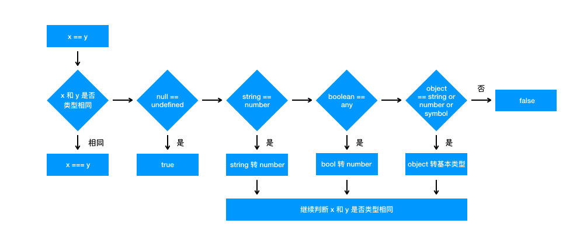

数据类型与数据类型转换
前言
本人平时学习及收集内容，欢迎参入一起讨论。
内容
一、数据类型种类
js 数据类型主要有 String、Number、Boolean、Object、Null、Undefined、Symbol
值类型：String、Number、Boolean、Symbol
引用类型：Object
特殊类型：Null、Undefined
二、数据类型转换
2.1 数据类型转换表
| 值 | 字符串 | 数字 | 布尔值 | 对象 |
|---|---|---|---|---|
| undefined | "undefined" | NaN | false | throws TypeError |
| null | "null" | 0 | false | throws TypeError |
| true | "true" | 1 | new Boolean(true) | |
| false | "false" | 0 | Boolean(false) | |
| ""(空字符串) | 0 | false | new String("") | |
| "1.2"(非空，数字) | 1.2 | true | new String("") | |
| "none"(非空，非数字) | NaN | true | new String("one") | |
| 0 | "0" | false | new Number(0) | |
| -0 | "0" | false | new Number(-0) | |
| NaN | "NaN" | false | new Number(NaN) | |
| Infinity | "Infinity" | true | new Number(Infinity) | |
| -Infinity | "-Infinity" | true | new Number(-Infinity) | |
| 1(无穷大，非零) | "1" | true | new Number(1) | |
| {}(任意对象) | 调用对象的 toStirng()方法，如果值是原值则返回，否则，调用对象的 valueOf()方法，如果值是原值则返回，否则抛出 TypeError 错误 | 调用对象的 toValue()方法，如果值是原值则返回，否则，调用对象的 valueString()方法，如果值是原值则返回，否则抛出 TypeError 错误 | true | |
| [](任意数组) | "" | 0 | true | |
| [9](1 个数字元素) | "9" | 9 | true | |
| ['a'](其他数组) | 使用 join()方法 | NaN | true | |
| function(){}(任意函数) | 将用户定义的函数转换为 JavaScript 源 eadc 字符串 | NaN | true |
2.2 ToPrimitive
抽象操作 ToPrimitive 用于将引用类型转为原始类型。实现细节比较复杂，可以参考这里。
//模拟一个对象的转基本类型操作 ToPrimitive
var o = {};
o[Symbol.toPrimitive] = function(hint) {
console.log(hint) //hint字符串至为 string number default 中的一个
if (hint == "default" || hint == "number") {
if (o.valueOf && typeof(o.valueof()) != 'object') {
return o.valueOf()
} else {
return o.toString()
}
} else {
if (o.toString && typeof(o.toString()) != 'object') {
return o.toString()
} else {
return o.valueOf()
}
}
}
String(o) // string
Number(o) // number
1+o // default
1-o // number
o++ // number
++o // number
2
3
4
5
6
7
8
9
10
11
12
13
14
15
16
17
18
19
20
21
22
23
24
25
规则如下：
如果传入参数是 string（目前只有调用 String()函数是执行这个顺序）：首先检查该值是否有 toString()方法。如果有并且返回基本类型值，就使用该值进行强制类型转换。如果没有就检查该值是否有 valueOf()方法。如果有并且返回基本类型值就使用该回值来进行强制类型转换，如果没有或者返回的不是基本类型值，就抛出错误。
如果传入参数是 number/default（常见强制类型转换都是这个顺序）：首先检查该值是否有 valueOf()方法。如果有并且返回基本类型值，就使用该值进行强制类型转换。如果没有就检查该值是否有 toString()方法。如果有并且返回基本类型值就使用该回值来进行强制类型转换，如果没有或者返回的不是基本类型值，就抛出错误。
2.3 ToString
抽象操作 ToString，负责处理非字符串到字符串的强制类型转换。当需要一个值的字符串形式，就会进行 ToString 类型转换。
String()函数就会执行抽象操作 ToString，遵循下列转换规则：
- 如果值是基本类型，则直接转为字符串。如果是引用类型，则执行 ToPrimitive 抽象操作；
- 如果值是 null，则返回"null"；
- 如果值是 undefined，则返回"undefined"。
2.4 ToNumber
抽象操作 ToNumber，负责处理非数字到数字的强制类型转换。
Number()执行抽象操作 ToNumber，函数的转换规则如下。
- 如果是 Boolean 值，true 和 false 将分别被转换为 1 和 0。
- 如果是数字值，只是简单的传入和返回。
- 如果是 null 值，返回 0。
- 如果是 undefined，返回 NaN。
- 如果是字符串：如果字符串是空的（不包含任何字符），则将其转换为 0；如果含非数字，则将其转换为 NaN。
- 如果是对象，则执行 ToPrimitive 抽象操作，返回基本类型再按照以上规则处理。
Number() // 0
Number('') // 0
Number(' ') // 0
Number('0') // 0
Number('asdf') // NaN
Number(true) // 1
Number(false) // 0
Number(null) // 0
Number(undefined) // NaN 与null不同，需要注意
// 对象会先通过抽象操作ToPrimitive转为基本类型，然后再转数字
Number({}) // NaN
Number([]) // 0
Number(['']) // 0
Number([' ']) // 0
Number(['0']) // 0
Number([1,2]) // NaN
2
3
4
5
6
7
8
9
10
11
12
13
14
15
16
17
2.5 ToBoolean
抽象操作 ToBoolean，负责处理非布尔值到布尔值的强制类型转换。
转换为 boolean 类型是最为简单的一个。转换规则如下：
(1) 可以被强制类型转换为 false 的值
- undefined
- null
- false
- +0、-0 和 NaN
- ""
(2) 其他值会被被强制类型转换为 true
这里有一个概念需要先理解：js 的操作符和操作数组成了表达式，表达式必定会返回一个值。无论是一元操作++a，还是布尔操作[] || false，都会返回一个值。
2.6 相等运算符类型转换，一共有 12 步骤
- 如果 y 不是正常值，中断执行。
- 如果 Type(x)与 Type(y)相同，执行严格相等运算 x === y。
- 如果 x 是 null，y 是 undefined，返回 true。
- 如果 x 是 undefined，y 是 null，返回 true。
- 如果 Type(x)是数值，Type(y)是字符串，返回 x == ToNumber(y)的结果。
- 如果 Type(x)是字符串，Type(y)是数值，返回 ToNumber(x) == y 的结果。
- 如果 Type(x)是布尔值，返回 ToNumber(x) == y 的结果。
- 如果 Type(y)是布尔值，返回 x == ToNumber(y)的结果。
- 如果 Type(x)是字符串或数值或 Symbol 值，Type(y)是对象，返回 x == ToPrimitive(y)的结果。
- 如果 Type(x)是对象，Type(y)是字符串或数值或 Symbol 值，返回 ToPrimitive(x) == y 的结果。
- 返回 false。
理解如图： 
三、数据类型判断
- typeof
- Object.prototype.toString
- Instanceof
- Constructor
- 实现 type API
3.1 typeof
typeof 是一元操作符，放在其单个操作数的前面，操作数可以是任意类型。返回值为表示操作数类型的一个字符串。
typeof 不能细分 object,object 可以细分 Array、Function、Date、RegExp、Error 等。
"undefined" — 未定义
"boolean" — 布尔值
"string" — 字符串
"number" — 数值
"object" — 对象或null
"function" — 函数
2
3
4
5
6
3.2 Object.prototype.toString
当 toString 方法被调用的时候，下面的步骤会被执行：
- 如果 this 值是 undefined，就返回 [object Undefined]
- 如果 this 的值是 null，就返回 [object Null]
- 让 O 成为 ToObject(this) 的结果
- 让 class 成为 O 的内部属性 [[Class]] 的值
- 最后返回由 "[object " 和 class 和 "]" 三个部分组成的字符串
3.3 Instanceof
instanceof 用于检测引用类型，可以检测到它是什么类型的实例。 instanceof 检测一个对象 A 是不是另一个对象 B 的实例的原理是：查看对象 B 的 prototype 指向的对象是否在对象 A 的[[prototype]]链上。如果在，则返回 true,如果不在则返回 false。不过有一个特殊的情况，当对象 B 的 prototype 为 null 将会报错(类似于空指针异常)。
var sXzaver = new String("Xzavier");
console.log(sXzaver instanceof String); // "true"
var aXzaver = [1,2,3];
console.log(aXzaver instanceof Array); // "true"
检测数组在ECMA Script5中定义了一个新方法Array.isArray()
2
3
4
5
3.3 Instanceof
constructor 属性返回对创建此对象的数组函数的引用。可以用于检测自定义类型。
'xz'.constructor == String // true
(123).constructor == Number // true
(true).constructor == Boolean // true
[1,2].constructor == Array // true
({name:'xz'}).constructor == Object // true
(function(){}).constructor == Function // true
(new Date()).constructor == Date // true
(Symbol()).constructor == Symbol // true
(/xz/).constructor == RegExp // true
2
3
4
5
6
7
8
9
10
3.4 Object.prototype.toString
原理：调用从Object继承来的原始的toString()方法
Object.prototype.toString.call('xz'); //"[object String]"
Object.prototype.toString.call(123); //"[object Number]"
Object.prototype.toString.call(true); //"[object Boolean]"
Object.prototype.toString.call([1,2]); //"[object Array]"
Object.prototype.toString.call({name:'xz'}); //"[object Object]"
Object.prototype.toString.call(function(){}); //"[object Function]"
Object.prototype.toString.call(null); //"[object Null]"
Object.prototype.toString.call(undefined); //"[object Undefined]"
Object.prototype.toString.call(); //"[object Undefined]"
Object.prototype.toString.call(new Date()); //"[object Date]"
Object.prototype.toString.call(/xz/); //"[object RegExp]"
Object.prototype.toString.call(Symbol()); //"[object Symbol]"
var obj = {name:"Xzavier", age:23};
var a = [1,2,3];
function isType(obj) {
return Object.prototype.toString.call(obj).slice(8, -1);
}
isType(obj); // "Object"
isType(a) // "Array"
2
3
4
5
6
7
8
9
10
11
12
13
14
15
16
17
18
19
20
21
22
23
24
四、实现 type API
既然有了 Object.prototype.toString 这个神器！那就让我们写个 type 函数帮助我们以后识别各种类型的值了。
var class2type = {};
// 生成class2type映射
"Boolean Number String Function Array Date RegExp Object Error".split(" ").map(function(item, index) {
class2type["[object " + item + "]"] = item.toLowerCase();
})
function type(obj) {
// 一箭双雕
if (obj == null) {
return obj + "";
}
return typeof obj === "object" || typeof obj === "function" ?
class2type[Object.prototype.toString.call(obj)] || "object" :
typeof obj;
}
2
3
4
5
6
7
8
9
10
11
12
13
14
15
16
参考资料
- 《JavaScript 权威第六版》
- JavaScript 专题之类型判断(上)
联系作者
平凡世界，贵在坚持。